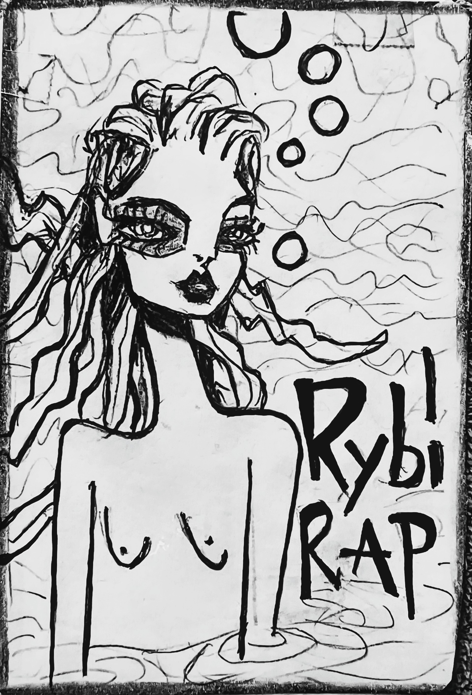

„Flow je king a king je ryba. Beat jí dělá sea i jezera."
Říká se, že ryby mlčí. Ale to je suchozemská lež. Ryby rapujou – ne do mikrofonů, ale do proudů. Každý druh má svůj styl. Jejich hudba není pro uši – ovlivňuje vlastnosti vody. A když ryba začala rapovat na hladině, voda odpověděla. Vlny se složily do veršů, mlha opsala flow. A kruhy v obilí? To je rybí hitparáda.
Kliknutím na figuru v tabulce ji označíte v textu.
Odpovězte rychle, bez opravování.
Smysl